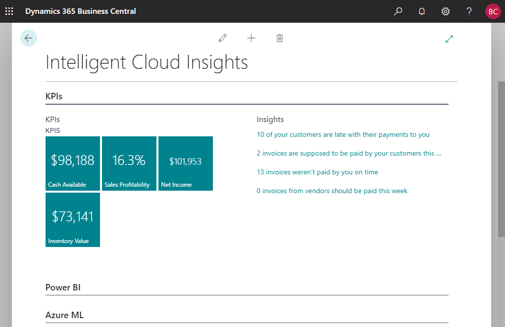

Intelligent Insights with Business Central Online
As a user of Business Central online, you have full access to scenarios that are based on the intelligent cloud, such as KPIs that are based on machine learning, or when you view your data in Power BI. However, while Business Central is a cloud-first service, also those customers who need to run their workloads fully on-premises or on the intelligent edge connected to the cloud can do so.
If you are interested in Business Central, you can sign up for a free trial online, or you can choose to work with a partner to deploy Business Central locally to your own choice of hardware. You can then decide to get intelligent insights by connecting to a tenant in the cloud. As a result, the data from your locally deployed Business Central will be replicated to the cloud for intelligent cloud scenarios.
Connecting to the intelligent cloud from an on-premises solution requires your administrator to specify information about your database. The tools used to connect your on-premises deployment to Business Central online are the same that are also used to migration from on-premises to online. For more information, see Migrating On-Premises Data to Business Central Online in the administration content for Business Central.
Viewing Intelligent Cloud Insights in Business Central Online
In your Business Central online company, the Intelligent Cloud Insights page shows four key points of interest for most businesses:
- Cash availability
- Sales profitability
- Net income
- Inventory value
Next to the KPI charts, you get insights into potential areas of concern, including overdue payments. Choose each insight to drill into the data.

The page also connects to Power BI for even more insights.
Viewing Intelligent Insights On-Premises
When your Dynamics 365 reselling partner has acquired the right license for your on-premises solution to connect to the cloud through Business Central, your administrator can set up the connection. Once that is done, you can view the same insights from the cloud in your on-premises application. Depending on the on-premises solution, the Intelligent Cloud Insights page can be embedded in the Home page or be a separate page as in Business Central online and on-premises.
See Also
Welcome to Business Central
Business Central Intelligent Cloud extension
Data Replication extension
Migrating On-Premises Data to Business Central Online